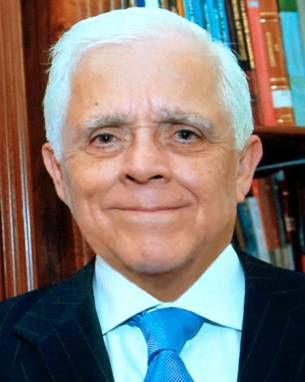

Ministro Genaro David Góngora Pimentel
Lugar y fecha de nacimiento: Chihuahua, Chihuahua, 8 de septiembre de 1937.
Realizó sus estudios preuniversitarios en Ensenada, Baja California y Hermosillo, Sonora.
Licenciado en Derecho por la Universidad Nacional Autónoma de México al sustentar la tesis “De la agencia marítima” el 1o. de octubre de 1963.
Doctor en Derecho con Mención Honorífica en la misma Universidad “Aula Magna Jacinto Pallares”, al sostener la tesis de grado “El Voto Jurisdiccional” el 5 de diciembre de 2006.
Secretario de Estudio y Cuenta adscrito al Pleno de la Suprema Corte de Justicia de la Nación (1969).
Juez de Distrito en Materia Administrativa en el Distrito Federal (1972-1978).
Magistrado en el Tribunal Colegiado del Quinto Circuito con residencia en Hermosillo, Sonora (1978); Tercer Tribunal Colegiado en Materia Civil y Tercer Tribunal Colegiado en Materia Administrativa, ambos del Primer Circuito (1978-1995).
Ministro de la Suprema Corte de Justicia de la Nación, designado el 26 de enero de 1995, en sesión pública del Senado de la República para el periodo que vence el 30 de noviembre de 2009.
Presidente de la Segunda Sala de la Suprema Corte de Justicia de la Nación (1996-1997).
Presidente de la Suprema Corte de Justicia de la Nación y del Consejo de la Judicatura Federal, electo por el Pleno del más Alto Tribunal (1999-2002).
A la fecha, Ministro de la Segunda Sala.
Secretario “B” de Acuerdos del Tribunal Fiscal de la Federación (1964-1969).
Secretario General de Acuerdos Interino del mismo Tribunal (1966).
Asesor Jurídico de la Dirección General de Marina Mercante (1968-1969).
Vocal Secretario de la Comisión Nacional Coordinadora de Puertos (1971).
Por más de cuarenta años maestro de derecho marítimo, mercantil y amparo en la Facultad de Derecho de la Universidad Nacional Autónoma de México, y de Derecho Fiscal en la Universidad Anáhuac; así mismo ha impartido clases en el Instituto de Especialización Judicial ahora Instituto de la Judicatura del Poder Judicial de la Federación.
A partir del semestre 2009-I (agosto 2008), catedrático del Posgrado de la Facultad de Derecho UNAM en la Especialización en Derecho de la Administración y Procuración de Justicia, materia Juicio de Amparo.
Conferencista en múltiples universidades, facultades, institutos, escuelas, barras y órganos jurisdiccionales nacionales e internacionales entre los que se cuentan: UNAM, Anáhuac, Iberoamericana, Libre de Derecho, La Salle, ITESM, CIDE; Autónomas de: Puebla, Tabasco, Colima, Zacatecas, Nuevo León, de la Laguna, Baja California, Chihuahua; Facultad Libre de Derecho de Monterrey; Escuelas de Derecho de: Aragón, Acatlán, Sinaloa, Morelos; Institutos de la Judicatura Federal y de Investigaciones Jurídicas de la UNAM; Barra Mexicana Colegio de Abogados, American Bar Association; Centros de Estudios y Colegios de Abogados Constitucionalistas, de Profesores de Garantías y Amparo, de Secretarios de la SCJN, de la Defensa Nacional; Tribunales Federales de Justicia Fiscal y Administrativa, Conciliación y Arbitraje; Tribunales de Justicia de Oaxaca, Tlaxcala, Puebla, Distrito Federal y de lo Contencioso Administrativo de Guanajuato; Despachos como Basham, Ringe y Correa, S.C.
En Universidades de Harvard en Cambridge, Massachussets y Georgetown, Washington ; de Belgrano y Católica de Salta, República de Argentina.
Ponente en las cumbres de Presidentes de Tribunales y Cortes Supremas en Madrid (1997), Zacatecas (1999), Panamá (2001) y Tenerife (2001), así como en la cumbre de Presidentes de Consejos de la Judicatura en Barcelona (2001).
Entre sus obras más destacadas se encuentran:
“Introducción al Estudio del Juicio de Amparo”, 11a. ed. 2007.
“La Suspensión en Materia Administrativa”, 10a. ed. 2008.
“El Derecho que tenemos: La Justicia que Esperamos”, 2a. ed. 2006.
“Evolución del Secuestro en México y las decisiones del Poder Judicial de la Federación en la materia”, 2a. ed. 2005.
“El Veto al Presupuesto de Egresos de la Federación”, 1a. ed. 2005.
“El Voto Jurisdiccional y mi disenso en el Máximo Tribunal”, 1a. ed. 2007.
“La lucha por el Amparo Fiscal”, 1a. ed. 2007.
Ha publicado en colaboración con el Dr. Acosta Romero:
“Constitución Política de los Estados Unidos Mexicanos: doctrina, legislación, jurisprudencia”, 4a. ed. 1992.
“Ley de Amparo: legislación, jurisprudencia”, doctrina, 2a. ed. 1985.
“Código Federal de Procedimientos Civiles. Ley Orgánica del Poder Judicial Federal. Legislación, jurisprudencia, doctrina”, 2a. ed. 1986.
En coautoría con la Magistrada María Guadalupe Saucedo Zavala:
“La Suspensión del Acto Reclamado. Compilación alfabética de tesis jurisprudenciales y precedentes”, 7a. ed. 2005.
“Ley de Amparo. Doctrina Jurisprudencial” dos tomos y cuatro volúmenes, 6a. ed. 2001, actualizado el tomo I, primera y segunda partes, 7a. ed. 2004.
Invitado por la XLVI Legislatura a integrar los comentarios, antecedentes e historia legislativa del articulado constitucional “Derechos del pueblo mexicano. México a través de sus constituciones”.
Desde 1981, participa en la elaboración del Diccionario Jurídico Mexicano en la materia mercantil, editado por el Instituto de Investigaciones Jurídicas de la UNAM.
En 2005, con motivo de la instalación del Círculo de Estudios Jurídicos “Genaro Góngora Pimentel”, ha contribuido en la compilación de una serie de análisis publicados como “El Quehacer Jurídico y la Judicatura”.
Colaboración en el “Diccionario Crítico el Derecho Penal a juicio” con la voz Secuestro, INACIPE 2008.
Estudio Introductorio en la obra facsimilar de Silvestre Moreno Cora editada por la Suprema Corte de Justicia de la Nación: “Tratado del Juicio de Amparo conforme a las Sentencias de los Tribunales Federales”, 2008.
Además de innumerables artículos y ensayos publicados en diversas revistas especializadas nacionales y extranjeras.
El H. Consejo Técnico de la UNAM, acordó que fuera recipiendario de la Medalla al Mérito Docente “Prima de Leyes Instituta”,1992.
La Asociación Nacional de Abogados, miembro de L' Union Internationale Des Avocats, de la Inter American Bar Association y de la Unión Iberoamericana de Abogados, le otorgó la presea "Gran Cruz al Mérito Judicial" que le fue entregada por el Presidente de la República, el 13 de julio de 1992.
"Foro de México", A.C., lo distinguió con la "Presea al Mérito Judicial", impuesta por el Titular del Poder Ejecutivo, el 12 de julio de 1994.
La División de Estudios de Posgrado de la UNAM, generación 85-II, le otorgó el “Reconocimiento Jurídico Académico Ignacio L. Vallarta”, 1995.
El Gobierno de Rumania le distinguió con la imposición de la Orden de la “Estrella de Rumania en Grado de Gran Cruz”, el 19 de noviembre de 2001.
La Corte Suprema de Nicaragua le rindió homenaje por su valiosa aportación al fortalecimiento de las relaciones entre los Poderes Judiciales de México y Nicaragua, 2002.
La Universidad Juárez Autónoma de Tabasco le confirió el grado de Doctor Honoris Causa , por sus méritos excepcionales en la docencia, investigación jurídica e impartición de justicia y la consolidación del Poder Judicial Federal en México, el 11 de abril de 2002.
El Tribunal Superior de Justicia del Estado de Puebla le confirió la Medalla de Oro “Abogado José María Lafragua Ibarra”, en reconocimiento a su distinguida trayectoria profesional y a su patriótica y perseverante labor a favor de la justicia, el 5 de julio de 2002.
El Alcalde de la Ciudad de La Antigua, Guatemala, lo declaró Visitante Distinguido, el 2 de agosto de 2002.
Con fecha 10 de septiembre de 2002, el Sindicato de Trabajadores del Poder Judicial de la Federación, otorgó reconocimiento al señor Ministro Presidente en el Gran Salón del Club de Banqueros.
Inauguró la “Biblioteca Ministro Licenciado Genaro David Góngora Pimentel”, en la Escuela de Municipalistas en la ciudad de Guanajuato, el 10 de octubre de 2002.
El Instituto de Ciencias Jurídicas de Egresados de la UNAM Campus Aragón, A.C., en el marco de su XIII aniversario, le otorgó la "Presea Tepantlato", en el Alcázar del Castillo de Chapultepec, el 30 de octubre de 2002.
El Gobierno del Reino de España le otorgó la “Gran Cruz” de la Orden de Isabel la Católica, el 8 de noviembre de 2002.
La Barra Queretana Colegio de Abogados, A.C., le otorgó un reconocimiento por la magnífica disertación de la ponencia “Una inquietud y tres historias”, el 2 de abril de 2003.
Se instaló el Círculo de Estudios Jurídicos “Genaro Góngora Pimentel” y se le tomó protesta a sus miembros, en Chihuahua, Chih., el 16 de junio de 2004.
La Universidad Autónoma de Nuevo León a través de la Facultad de Derecho y Criminología, le confirió reconocimiento por la presentación de su obra “Evolución del Secuestro en México y las decisiones del Poder Judicial de la Federación en la materia”, el 18 de agosto de 2004.
Se le nombró Miembro Honorario de La Liga Mundial de Abogados Ambientalistas, A.C., asimismo le otorgó la máxima condecoración Venera “IUS AMBIENS”, el 6 de octubre de 2004.
Fue reconocido por sus 35 años de servicio prestado al Poder Judicial de la Federación, el 23 de noviembre de 2004.
El Instituto Nacional del Derecho de Autor y la Facultad de Derecho de la Máxima Casa de Estudios, le concedió una distinción con motivo del Programa Nacional de Reconocimiento a Profesores de las Universidades Públicas con Obra Escrita, el 18 de febrero de 2005.
La Universidad Juárez Autónoma de Tabasco le entregó el Galardón “Fuerza Jurídica”, que reconoce y valora la trayectoria jurídica de prestigiados abogados, mismo que se llevó a cabo en el “Espacio Escénico Juchimán” del Instituto Juárez, el 11 de marzo de 2005.
La Universidad Contemporánea de la ciudad de Querétaro, instaló el Capítulo de la Fraternidad Phi Delta Phi Góngora Pimentel Inn, el 27 de abril de 2005.
La Confederación Revolucionaria de Obreros y Campesinos le concedió reconocimiento al mérito “Impartición de Justicia”, el 12 de julio de 2005.
El Colegio de Abogados “Genaro David Góngora Pimentel” Playas de Rosarito, A.C., le otorgó un reconocimiento como primer miembro honorífico por su brillante contribución en la impartición de justicia en la nación haciendo con ello prevalecer el Estado de Derecho; también se llevó a cabo la declaratoria de apertura, inauguración y toma de protesta de la Primera Mesa Directiva del mencionado Colegio, el 8 de septiembre de 2005.
El Supremo Tribunal de Justicia del Estado de Chihuahua, con motivo del 180 aniversario 1825-2005, le otorgó reconocimiento por su destacada y brillante labor jurídica, enorgulleciendo al Estado de Chihuahua, el 7 de noviembre de 2005.
El Presidente del Tribunal Superior de Justicia y del Consejo de la Judicatura del Poder Judicial del Estado de Tabasco, lo invitó a formar parte del Consejo Editorial de la Revista “Nexo Jurídico”, órgano oficial de información y difusión, el 23 de marzo de 2007.
La Asociación de Abogados Litigantes de la República Mexicana, A.C., destacó su trayectoria profesional. En cuyo acto impartió la conferencia “La educación jurídica como instrumento en la consolidación del Estado Social y Democrático de Derecho”, el 26 de marzo de 2007.
El H. Ayuntamiento Constitucional de Tlacotalpan, Veracruz, le otorgó el “Testimonio de Visitante Distinguido”, por su muy destacada labor y trayectoria en el ámbito de la impartición de justicia en nuestro país, el 30 de marzo de 2007.
La Asociación Nacional de Doctores en Derecho, Colegio de Profesionistas, A.C., le da la bienvenida como Miembro, el 12 de abril de 2007.
Reconocimiento como miembro fundador del Claustro de Académicos de la Facultad de Derecho de la UNAM que poseen Grado de Doctor, el 18 de abril de 2007.
Reconocimiento por el Fomento a la Ciencia y al Desarrollo del Derecho Tributario en México, obsequiado por el Tribunal de Conciliación y Arbitraje del Mercosur, 5 de Julio de 2007.
Por acuerdo de la Comisión General Permanente de Honor y Justicia del H. Consejo Universitario, la Universidad Autónoma de Coahuila, le otorgó el Titulo Honorífico de “Maestro Ad Vitam”, por su prestigiada labor en el ámbito de la judicatura, su reconocida trayectoria en el ejercicio de su carrera judicial y su destacada labor docente en diversas universidades del país, el 24 de agosto de 2007.
Reconocimiento como Miembro Distinguido de la Sociedad de Exalumnos de la Facultad de Derecho UNAM, septiembre de 2007.
La Facultad de Derecho de la Universidad Nacional Autónoma de México, le impuso las insignias de Doctor en Derecho, el 19 de septiembre de 2007.
Inauguración de la Biblioteca “Ministro Genaro David Góngora Pimentel” en el Palacio de Justicia San Cristóbal de las Casas, Chiapas, el 10 de mayo de 2008.
Nombramiento como Huésped Distinguido de la Ciudad, Comitán de Domínguez, Chiapas, 10 de mayo de 2008.
Reconocimiento por relevante participación como ponente en el Primer Congreso Internacional sobre Justicia Constitucional y el Quinto Encuentro Iberoamericano de Derecho Procesal Constitucional, Cancún, Quintana Roo, 14 al 17 de mayo de 2008.
Reconocimiento por recibir a los alumnos de la licenciatura en Derecho de la Universidad de Baja California en la Suprema Corte de Justicia de la Nación. Ensenada, Baja California, 15 de mayo de 2008.
El Rector de la Universidad Católica de Salta, con el voto del H. Consejo Académico (Resolución de Rectorado 456/08), en reconocimiento a sus méritos académicos, le confirió el título de “Profesor Extraordinario Visitante” el 23 de mayo de 2008, Ciudad Universitaria de Campo Castañeras de la Ciudad de Salta, provincia del mismo nombre, República de Argentina.
Mediante Acuerdo Extraordinario de 11 de junio de 2008, el Presidente y Jueces de la Corte de Salta, República de Argentina, determinaron recibir al Ministro Dr. D. Genaro David Góngora Pimentel destacando la importancia por la investidura que ejerce.
El 16 de junio de 2008, la Liga Mundial de Abogados Ambientalistas - Capítulo Paraguay le otorgó reconocimiento por su destacada labor en defensa del medio ambiente en Latinoamérica, (entregado el 19 de junio en la Universidad de Belgrano, Buenos Aires, Argentina).
Por Decreto del Gobernador, fue nombrado “Visitante Distinguido” de la Provincia de Salta, República de Argentina, el 17 de junio de 2008.
La Universidad de Belgrano a través de su Facultad de Derecho y Ciencias Sociales, le extendió reconocimiento por su destacada y brillante labor jurídica con motivo de su conferencia sobre el tema “La educación jurídica como instrumento en la consolidación del Estado social y democrático de derecho”. Buenos Aires, 19 de Junio de 2008.
Ese mismo día, la Presidenta de la Auditoría General de la Ciudad de Buenos Aires, le extendió reconocimiento por su intensa labor jurisdiccional e invalorables aportes a la doctrina ius ambientalista latinoamericana en pos de un desarrollo sustentable basado en el excelso cuidado del medio ambiente.
El Presidente de la Corte Suprema de Justicia de la Nación de Argentina le otorgó la Medalla “Poder Judicial Corte Suprema de Justicia de la Nación”, Buenos Aires, 20 de junio de 2008.